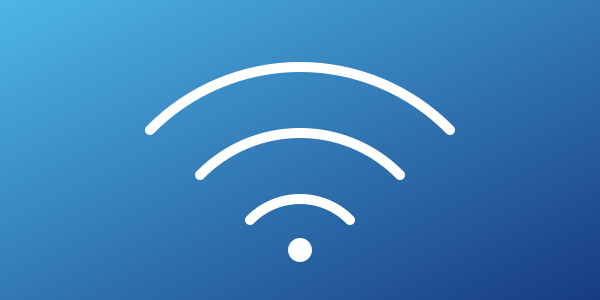
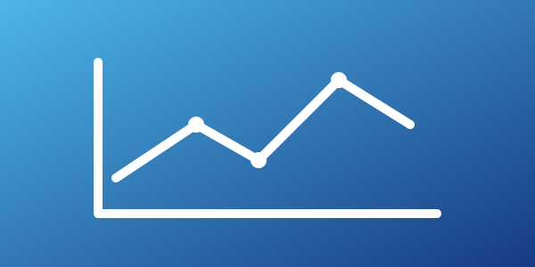

Rede
Configuração de redes
Instalação e configuração de roteadores, switches e redes Wi-Fi.
Solicitar atendimento →Conectividade, segurança e suporte técnico
Seção de apresentação
A Central de Serviços de Rede reúne atendimentos de configuração, suporte técnico, segurança e monitoramento para manter sua estrutura de rede funcionando com qualidade.

Instalação e configuração de roteadores, switches e redes Wi-Fi.
Solicitar atendimento →Resolução de problemas em computadores, impressoras e sistemas.
Solicitar atendimento →Atualização de antivírus, firewall e controle de acessos à rede.
Solicitar atendimento →
Acompanhamento contínuo do desempenho e da disponibilidade da rede.
Solicitar atendimento →